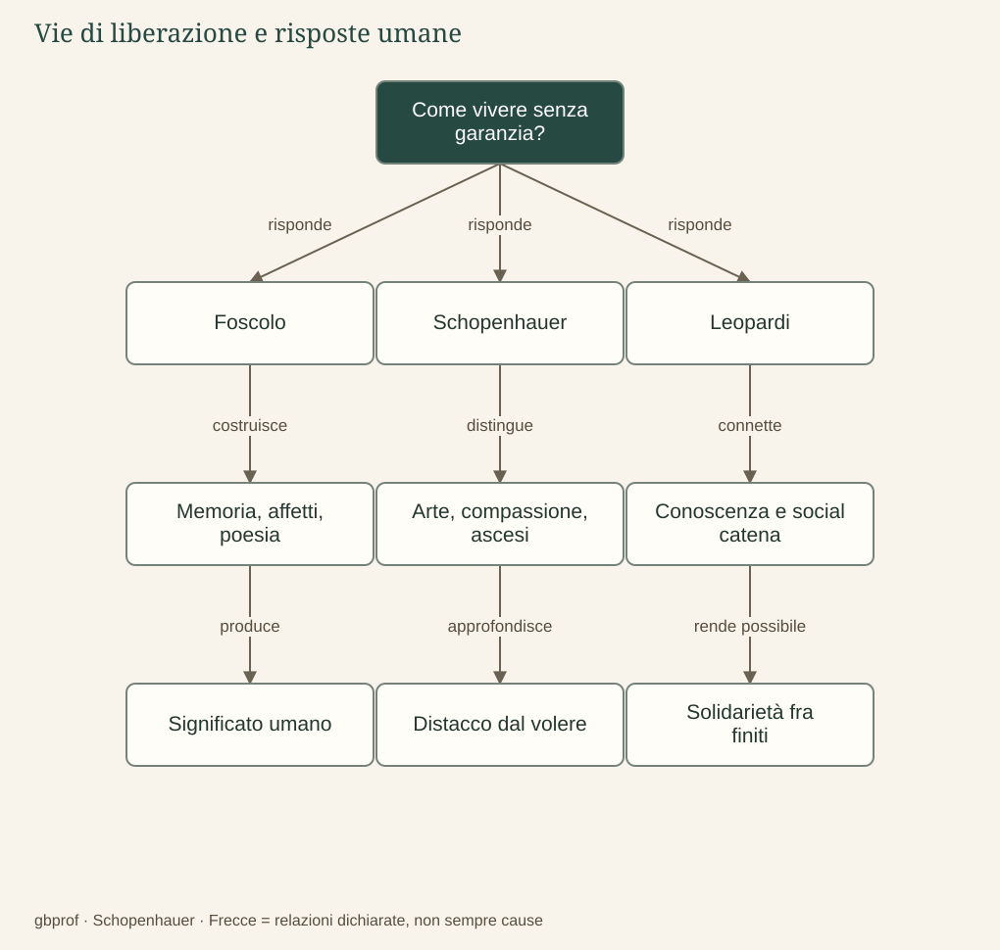

B · Schopenhauer e la letteratura · 04
Esiste qualcosa che possa salvarci?
Dare significato, liberarsi dal volere e aiutarsi sono la stessa risposta?
«Salvezza» è una parola impegnativa, perché può indicare cose molto diverse: l’immortalità, la fine del dolore, una tregua, la possibilità di vivere con dignità. Prima di confrontare gli autori bisogna chiarire quale significato le attribuiamo. Né una poesia né un gesto solidale cancellano la morte; possono tuttavia trasformare la condizione umana senza promettere ciò che non possono mantenere. È su questo terreno che le differenze diventano più istruttive delle somiglianze.
Foscolo: costruire significati dentro la finitezza
Nei Sepolcri il ragionamento passa dall’inutilità materiale della tomba per il morto al suo valore per i vivi. Il sepolcro offre un luogo al ricordo, rende riconoscibile un legame e contribuisce a trasmettere esempi. Il tempo distruggerà anche le pietre, ma la poesia può prolungare la memoria oltre la durata del monumento. Questa sopravvivenza è affettiva, culturale e civile; non dimostra che l’individuo continui a sentire dopo la morte.
Amore, patria, bellezza e memoria appartengono alla «religione delle illusioni», formula con la quale il percorso didattico interpreta la costruzione di valori umani privi di una garanzia ultraterrena. Le illusioni non sono semplicemente menzogne, perché possono produrre effetti reali nelle relazioni e nella storia. Un esempio ricordato può orientare un’azione futura, e un affetto custodito può modificare il modo in cui viviamo.
Non dobbiamo però rendere Foscolo troppo pacificato. L’Ortis mostra il crollo delle speranze; i sonetti conservano una tensione che la forma contiene senza risolverla definitivamente. La risposta foscoliana rimane esposta alla fragilità, ma non per questo coincide con la negazione del desiderio. Essa continua a investire energia nei legami e nella durata simbolica. Foscolo non è dunque un anticipatore di Schopenhauer: la parziale vicinanza del problema rende più evidente la distanza della risposta.
Schopenhauer: dalla tregua alla negazione
L’arte sospende temporaneamente il servizio che la conoscenza rende all’interesse individuale; la compassione conduce a prendere sul serio la sofferenza altrui; l’ascesi mira alla negazione dell’affermazione del volere. Non si tratta di tre consolazioni equivalenti. La prima trasforma l’attenzione, la seconda il motivo morale dell’azione, la terza il rapporto più radicale con il desiderare.
Il confronto con Foscolo illumina una divergenza. La poesia foscoliana può consolidare affetti, memoria e aspirazioni civili, mentre la contemplazione schopenhaueriana libera momentaneamente dalla pressione dell’interesse. Le opere possono certamente suscitare esperienze diverse nello stesso lettore; ciò non rende identiche le teorie che ne spiegano il valore. Anche la compassione, nel sistema di Schopenhauer, conserva un significato proprio e non deve essere assorbita interamente nell’ascesi.
Leopardi: conoscere il vero e costruire la social catena
La riflessione leopardiana sulle illusioni evolve e non si lascia ridurre a una semplice sostituzione del sogno con una verità gelida. Immaginazione e poesia continuano a mostrare la forza del desiderio; nell’ultima stagione, però, la conoscenza della comune vulnerabilità diventa il fondamento di una proposta di convivenza. Nella Ginestra la dignità consiste nel guardare il limite senza inventare una superiorità garantita dell’uomo.
La «social catena» unisce esseri che riconoscono la medesima esposizione al dolore. Non promette di vincere il Vesuvio o di rendere immortale la specie; invita a non aggiungere ostilità reciproca ai mali naturali e a offrire aiuto nei pericoli. La critica delle illusioni di un progresso necessariamente felice non coincide con il rifiuto di ogni miglioramento civile. Proprio una conoscenza non consolatoria può rendere più solida la giustizia.
La differenza rispetto a Schopenhauer è netta ma non assoluta. Entrambi attribuiscono valore al superamento dell’egoismo; Leopardi, però, non fonda il patto umano sull’unità metafisica della Volontà e non conclude nella sua negazione. La solidarietà è una risposta da costruire fra esseri finiti. Ridurre il confronto a «uno rinuncia, l’altro lotta» cancellerebbe la compassione schopenhaueriana e renderebbe troppo semplice anche la posizione leopardiana.
Verga: una domanda ancora da sviluppare
Per il futuro percorso restano predisposti l’ideale dell’ostrica, il bisogno, la «roba» e il rischio dell’ascesa. Occorrerà leggere l’attaccamento alla comunità come una figura da interrogare nei suoi contesti, non come una ricetta universale di felicità. La narrazione verghiana permetterà di domandare quali forme di resistenza, adattamento o sconfitta rimangano possibili dentro determinazioni sociali ed economiche. La traccia è presente; il collegamento alla PWA di Verga sarà attivato quando esisterà davvero.
Il problema in un’immagine
Dopo la lettura
Mappa di sintesi


Leggi la mappa in forma testuale
- Come vivere senza garanzia? risponde Foscolo.
- Come vivere senza garanzia? risponde Schopenhauer.
- Come vivere senza garanzia? risponde Leopardi.
- Foscolo costruisce Memoria, affetti, poesia.
- Schopenhauer distingue Arte, compassione, ascesi.
- Leopardi connette Conoscenza e social catena.
- Memoria, affetti, poesia produce Significato umano.
- Arte, compassione, ascesi approfondisce Distacco dal volere.
- Conoscenza e social catena rende possibile Solidarietà fra finiti.
Fermati sul problema
Quale differenza separa social catena e negazione ascetica?
Confronta il tuo ragionamento
La prima costruisce solidarietà fra esseri finiti; la seconda riguarda il rapporto radicale con il volere. La convergenza contro l’egoismo non elimina la differenza di fondamenti e di esiti.